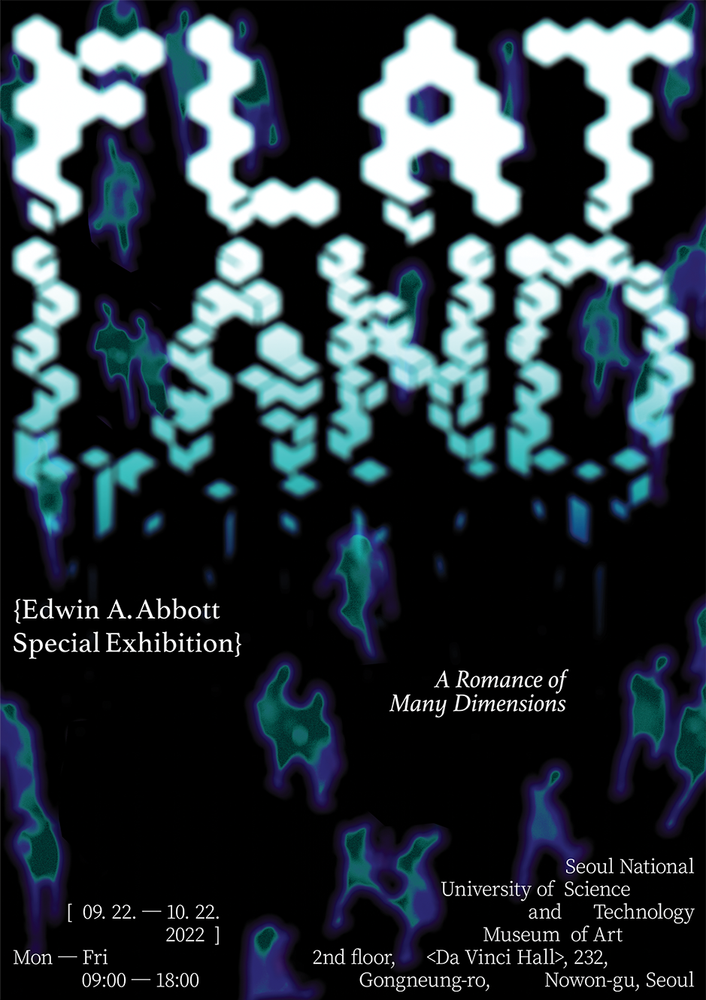
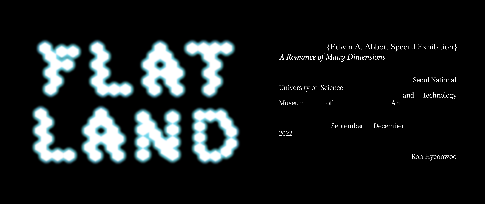

FLATLAND
<Flatland: A Romace of Many Dimensions>
Flat land는 영국 빅토리아 시대(1884) 쓰여진 사회 풍자 소설이자 SF, 수학 소설이다. 본 작품은 이 소설을 주제로 작가인 Edwin A. Abbott를 재조명하는 가상 전시이다.
About FLATLAND
점은 하나의 점에 불과하지만, 점이 이어지면 선이 된다. 선이 이어지면 면이 된다. 면이 이어지면 입체가 된다. 사람도 멀리서 보면 점 하나처럼 보이기도 한다. 사람이 상상하기 어려운 4차원의 세계는 사람과 사람이 소통하고 서로 함께할 때 보여지는 것이 아닐까. 플랫랜드에 갇혀살던 사각형 씨가 3차원을 마주했을 때의 그 감동적인 신비는 마주보고 있는 우리 서로의 안에서만 발견할 수 있는 게 아닐까.


